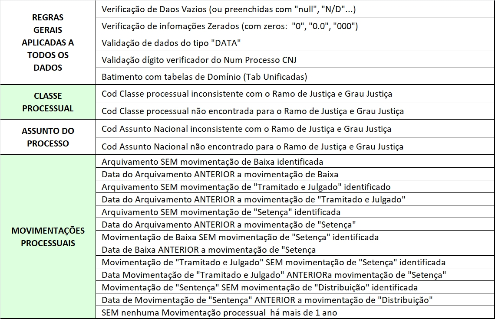
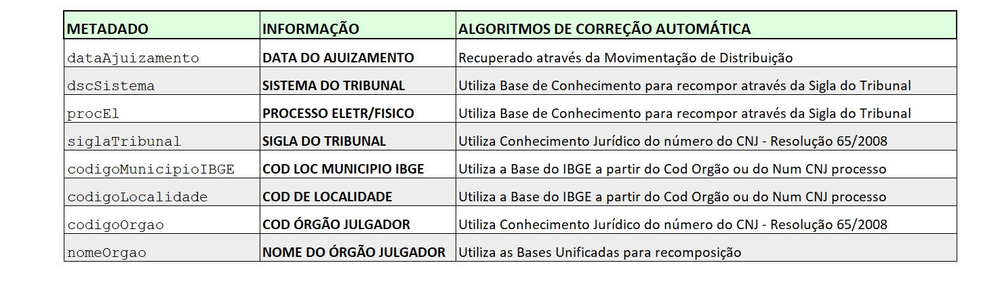

06) Regras e Métricas
O algoritmo de identificação de erros, anomalias e inconsistências
aplica em toda a base de dados, diversas regras de validação, conforme descritas abaixo:

O algoritmo inteligente de Correção Automática, utiliza mais de 10 Bases de Conhecimento,
com informações tratadas e padronizadas.
Utiliza também o Conhecimento Jurídico nos algoritmos,
como p.ex, a resolução do CNJ num. 65/2008,
que define a composição do Número do Processo
permitindo a recomposição de algumas infomações de localidade e
Órgão Julgador a partir de parte do Número do Processo.
É o Saber Jurídico somado ao Saber Tecnológico.
Outras regras de correção automática,
utilizadas nos processos de tratamento da base histórica do DATAJUD e
também no XML Valid (antes do envio do arquivo ao DATAJUD),
estão descritas abaixo:

07) Escalabilidade
Para esse desafio forma utilizados toda a amostra de 3 milhões de registros, enviado pelo CNJ.
O processamento foi realizado em uma máquina local (Notebook Intel i7 com 8GB de memória).
Os tempos de processamento totais ficaram próximo a 1 milhão de registros POR HORA.
Como sugestão de execução em produção, considerando o cenário de processamento
da base histórica de 200 milhões de registros do DATAJUD, pode ser
utilizado a técnica de PARALELISMO, isto é, dividir a base de entrada
em lotes de processamento (p.ex, dividir por cada Tribunal)
e executar cada lote em máquinas separadas (VMs),
ou em um Servidor que suporte Multi-Threads (com muitos processadores - CPUs).
08) Diferenciais
Não adianta fazer a identificação das inconsistências nos dados
e devolver a sujeira de volta aos tribunais,
pois teríamos um número muito alto de informações a serem corrigidas.
Portanto, nossa solução tem como principal diferencial,
o Modelo de correção automática de informações.
Com a nossa solução na versão de hoje, feita com as informações que foram disponibilizadas para o desafio,
já corrigimos de forma automática 8 informações das 22 disponibilizadas,
com o potencial de ampliar a correção com a utilização de novas regras e/ou
um escopo maior de informações disponíveis.